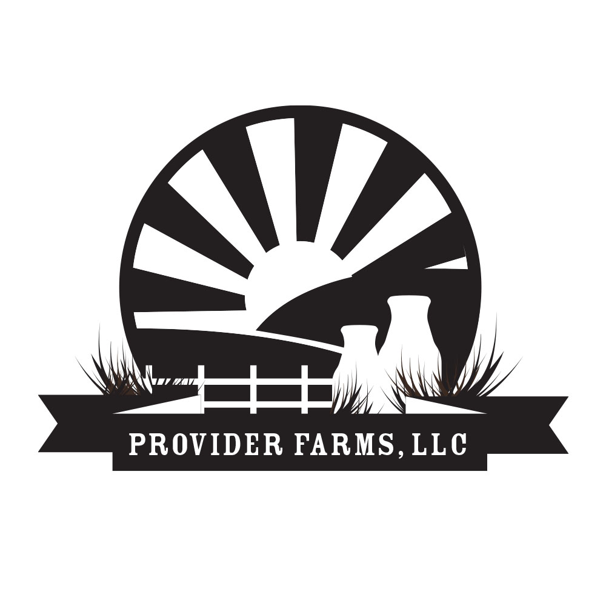
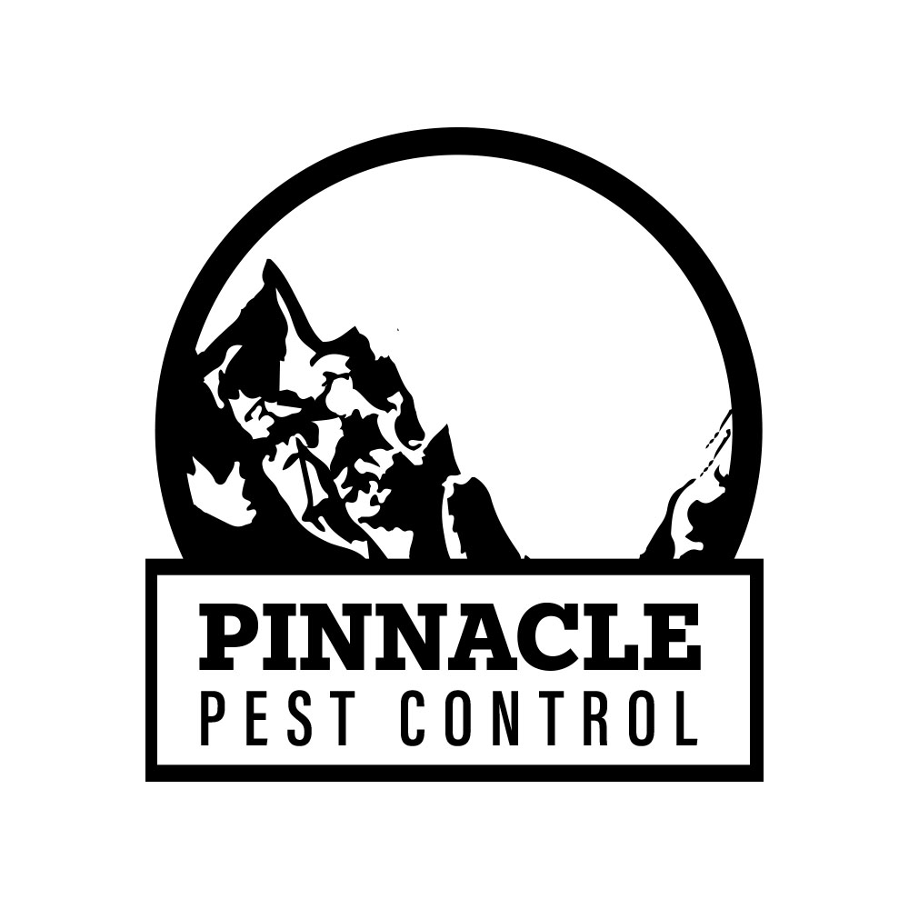
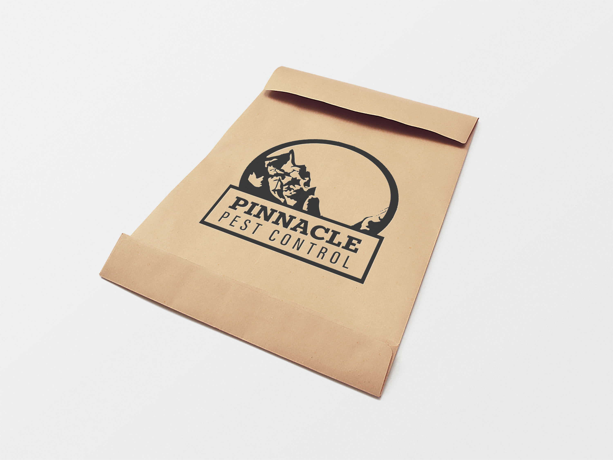

Cactus Needles: A Tailor Company
I created this logo and brand as a means to gain insight in how to combine two different objects and create one unique symbol. Throughout this process I did user research many times. I would approach people showing only the icon, not the typography and ask them what they thought the symbol represented and meant. This type of user testing proved to be very helpful. I was able to implement similar user testing in other logo projects. Overall, I think that this I was successful in communicating both the cactus and the sewing part of the brand through the logo.



Provider Farms
Provider Farms approached me with a strong business identity and were ready to create their first logo. I knew the logo would likely be used on everything from milk jugs to expo booths so I wanted it to be a strong symbol. Originally, I had added wheat instead of tufts of grass and farm rows instead of simple fields. Later the client and I decided it wasn't a good representation of the brand since no wheat or wheat-related products were sold and I felt that the grass represented cows and their milk more than wheat.




Pinnacle Pest Control
Pinnacle Pest Control approached me with one major requirement: They wanted a part of the Tetons in the logo. The logo was a very run representation of their company and was a tribute to the detail of the tetons and the rustic feel of them. I incorporated attention to negative space, contrast and the ability to have a versatile logo.